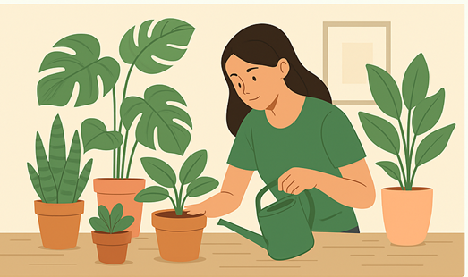
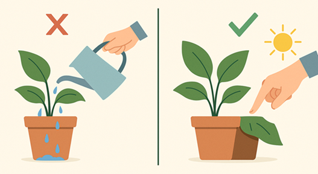

🌿 Welcome!
This site is made for people who are just getting started with houseplants. If you’ve ever asked yourself, “Why are my plant's leaves turning yellow?” or “How much should I be watering this?”, you're in the right place.

🌿 What You'll Find Here
- Beginner-friendly plant care guides
- Simple watering and light tips
- Common plant problems and how to fix them
- A printable checklist to keep your plants happy

🌿 A Quick Note for Pet Owners
Many common houseplants can be harmful to pets if ingested. If you share your home with curious cats or dogs, it’s important to choose plants carefully.
For a full list of toxic and non-toxic plants, I recommend checking the ASPCA’s Plant Toxicity List.
Always prioritize the safety of both your plants and your pets!
Download the Printable Checklist
You can grab a simple care checklist here (PDF) to print and use at home.